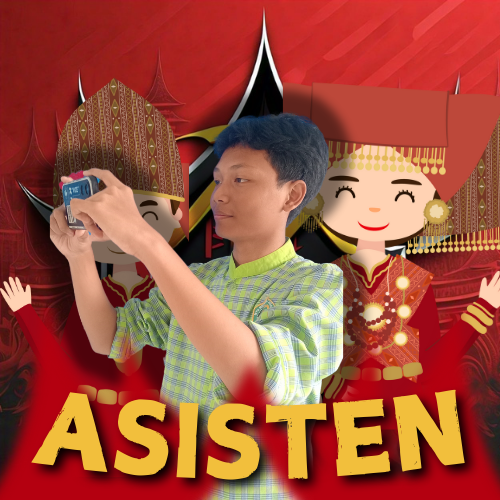
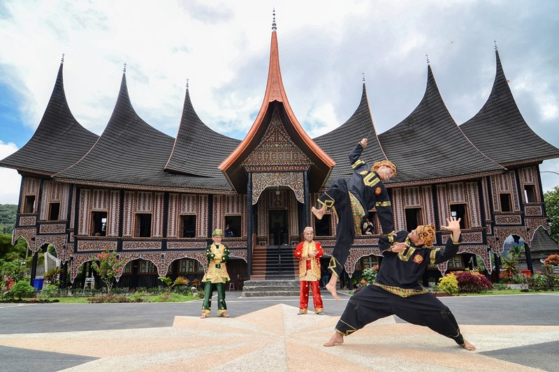
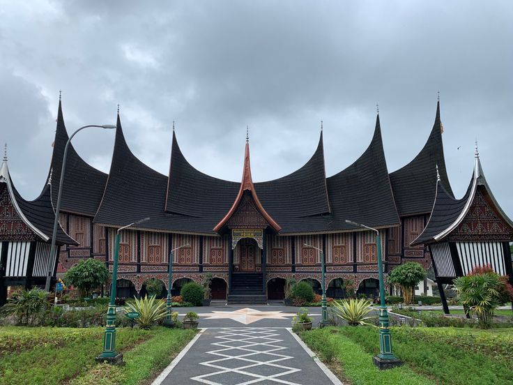

<!DOCTYPE html>
<html lang="id">
<head>
    <!-- Google Tag Manager -->
    <script>
        (function(w,d,s,l,i){w[l]=w[l]||[];w[l].push({'gtm.start': new Date().getTime(), event:'gtm.js'});
        var f=d.getElementsByTagName(s)[0], j=d.createElement(s), dl=l!='dataLayer'?'&l='+l:''; j.async=true;
        j.src='https://www.googletagmanager.com/gtm.js?id='+i+dl; f.parentNode.insertBefore(j,f);
        })(window,document,'script','dataLayer','GTM-NF3H24J8');
    </script>
    <!-- End Google Tag Manager -->

    <meta charset="UTF-8">
    <meta name="viewport" content="width=device-width, initial-scale=1.0">
    <title>Padang Indah Dipandang</title>

    <link rel="icon" href="public/favicon.png" type="image/png" sizes="32x32">
    <link rel="icon" href="public/favicon.png" type="image/png" sizes="16x16">

    <meta name="description" content="Temukan pembelajaran dan pengalaman baru tentang Kota Padang, by groupkotapadangintheword.">
    <meta name="keywords" content="Padang, wisata, kebudayaan, alam, Padang Indah, perjalanan, destinasi, tradisi, Nabil Vennu Pangestu, MTsN 1 Jaksel, Anak 94 MTsN 1 Jaksel, Padang Tops, PADANG TOPS">
    <meta name="author" content="Padang Indah - Nabil Vennu Pangestu">
    <link rel="canonical" href="https://padangwonderland.icu/">

    <!-- Open Graph Meta Tags for Social Media Sharing -->
    <meta property="og:title" content="Kota Sejuta Keindahan - PADANG TOPS">
    <meta property="og:description" content="Temukan pembelajaran dan pengalaman baru tentang Kota Padang, by groupkotapadangintheword.">
    <meta property="og:image" content="https://files.catbox.moe/f3ptvy.jpg">
    <meta property="og:url" content="https://padangwonderland.icu/">
    <meta property="og:type" content="website">
    <meta property="og:locale" content="id_ID">

    <!-- ROBOT TXT -->
    <meta name="robots" content="all,index,follow,noodp">

    <!-- Twitter Card Meta Tags -->
    <meta name="twitter:card" content="summary_large_image">
    <meta name="twitter:title" content="Kota Sejuta Keindahan - PADANG TOPS">
    <meta name="twitter:description" content="Temukan pembelajaran dan pengalaman baru tentang Kota Padang, by groupkotapadangintheword.">
    <meta name="twitter:image" content="https://files.catbox.moe/f3ptvy.jpg">

    <!-- External CSS & JS Libraries -->
    <link href="https://cdnjs.cloudflare.com/ajax/libs/font-awesome/6.0.0-beta3/css/all.min.css" rel="stylesheet">
    <link href="https://cdnjs.cloudflare.com/ajax/libs/tailwindcss/2.2.19/tailwind.min.css" rel="stylesheet">
    <link href="https://unpkg.com/aos@2.3.1/dist/aos.css" rel="stylesheet">
    <link href="navbar.css" rel="stylesheet">

    <!-- Include Vue.js -->
    <script src="https://cdn.jsdelivr.net/npm/vue@2.6.14/dist/vue.js"></script>
</head>
<body class="bg-white text-gray-800" id="app">
    <!-- Google Tag Manager (noscript) -->
    <noscript>
        <iframe src="https://www.googletagmanager.com/ns.html?id=GTM-NF3H24J8" height="0" width="0" style="display:none;visibility:hidden"></iframe>
    </noscript>
    <!-- End Google Tag Manager (noscript) -->

    <div id="app">
        <!-- Konten Vue.js Anda akan dimasukkan di sini -->
    </div>

    <!-- Vue.js Script -->
    <script>
        new Vue({
            el: '#app',
            data: {
                // Data Vue.js Anda
            },
            methods: {
                // Metode Vue.js Anda
            }
        });
    </script>
</body>
</html>

<!-- Navbar -->
<nav id="navbar" class="text-white p-5 fixed w-full top-0 transition-all duration-300 ease-in-out z-20 bg-transparent shadow-lg" style="font-family: 'Alhabsyi', sans-serif;">
    <div class="container mx-auto flex items-center justify-between">
        <!-- Logo -->
        <h1 class="text-2xl md:text-3xl font-extrabold tracking-wide text-red-500">
            Padang<span class="text-white">Explores</span>
        </h1>

        <!-- Menu Desktop -->
        <div class="hidden md:flex md:space-x-8">
            <a href="#home" class="menu-link hover:text-red-300 transition duration-200 font-semibold">Home</a>
            <a href="#tentang" class="menu-link hover:text-red-300 transition duration-200 font-semibold">Tentang</a>
            <a href="#wisata" class="menu-link hover:text-red-300 transition duration-200 font-semibold">Wisata Alam</a>
            <a href="#budaya" class="menu-link hover:text-red-300 transition duration-200 font-semibold">Budaya</a>
            <a href="#faq" class="menu-link hover:text-red-300 transition duration-200 font-semibold">FAQ</a>
            <a href="#kontak" class="menu-link hover:text-red-300 transition duration-200 font-semibold">Kontak</a>
        </div>

        <!-- Menu Mobile Toggle -->
        <div class="md:hidden">
            <button id="menu-toggle" class="focus:outline-none">
                <svg xmlns="http://www.w3.org/2000/svg" class="h-6 w-6" fill="none" viewBox="0 0 24 24" stroke="currentColor">
                    <path stroke-linecap="round" stroke-linejoin="round" stroke-width="2" d="M4 6h16M4 12h16m-7 6h7" />
                </svg>
            </button>
        </div>
    </div>

    <!-- Menu Mobile -->
    <ul id="menu" class="md:hidden fixed top-0 left-0 w-full h-full bg-red-500/90 text-white hidden flex-col space-y-6 justify-center items-center shadow-xl p-8 transform transition-transform duration-300">
        <!-- Close Button -->
        <button id="menu-close" class="absolute top-5 right-5 text-white text-3xl focus:outline-none">&times;</button>

          <!-- Menu Items -->
            <li><a href="#home" class="block py-4 transition text-xl font-semibold hover:text-red-300">Home</a></li>
            <li><a href="#tentang" class="block py-4 transition text-xl font-semibold hover:text-red-300">Tentang</a></li>
            <li><a href="#wisata" class="block py-4 transition text-xl font-semibold hover:text-red-300">Wisata Alam</a></li>
            <li><a href="#budaya" class="block py-4 transition text-xl font-semibold hover:text-red-300">Budaya</a></li>
            <li><a href="#faq" class="block py-4 transition text-xl font-semibold hover:text-red-300">FAQ</a></li>
            <li><a href="#kontak" class="block py-4 transition text-xl font-semibold hover:text-red-300">Kontak</a></li>
        </ul>
</nav>


<script>
    // Menu Mobile Toggle
    const menuToggle = document.getElementById('menu-toggle');
    const menuClose = document.getElementById('menu-close');
    const menu = document.getElementById('menu');

    menuToggle.addEventListener('click', () => {
        menu.classList.remove('hidden');
    });

    menuClose.addEventListener('click', () => {
        menu.classList.add('hidden');
    });

    // Mengubah warna teks menu desktop saat scrolling
    const menuLinks = document.querySelectorAll('.menu-link');
    const mobileMenuLinks = document.querySelectorAll('#menu li a');

    window.addEventListener('scroll', () => {
        if (window.scrollY > 50) {
            // Ubah warna teks menu desktop menjadi merah
            menuLinks.forEach(link => {
                link.classList.add('text-red-500');
            });

            // Ubah warna teks menu mobile menjadi merah
            mobileMenuLinks.forEach(link => {
                link.classList.add('text-red-400');
            });
        } else {
            // Kembalikan warna teks menu desktop ke default
            menuLinks.forEach(link => {
                link.classList.remove('text-red-500');
            });

            // Kembalikan warna teks menu mobile ke default
            mobileMenuLinks.forEach(link => {
                link.classList.remove('text-red-400');
            });
        }
    });

    // Menghindari konflik scroll dengan menu mobile
    menu.addEventListener('click', (event) => {
        // Tutup menu saat link diklik (opsional jika mau)
        if (event.target.tagName === 'A') {
            menu.classList.add('hidden');
        }
    });
</script>

<!-- Hero Section dengan Background Padang dan Parallax -->
<section id="home" class="relative h-screen bg-cover bg-center" style="background-image: url('https://files.catbox.moe/3itymh.jpg'); background-attachment: fixed;">
    <!-- Overlay Gelap untuk Background -->
    <div class="absolute inset-0 bg-gradient-to-t from-black via-transparent to-black opacity-70"></div>

    <!-- Konten Teks dan Tombol -->
    <div class="relative z-10 flex flex-col items-center justify-center h-full text-center text-white space-y-6 px-4">
        <h2 class="text-5xl md:text-6xl font-extrabold tracking-wide mb-4 drop-shadow-xl leading-tight">
            Jelajahi Pesona <span class="text-red-600">Padang</span>
        </h2>
        <p class="text-lg md:text-2xl font-light max-w-3xl mx-auto mb-8 drop-shadow-lg leading-relaxed">
            Temukan keindahan alam dan kekayaan budaya <strong>Minangkabau</strong>, dari 
            <span class="font-bold">pantai indah</span> hingga kuliner legendaris seperti <em>Rendang</em>. 
            Bersama <span class="font-semibold text-red-600">Nabil Vennu Pangestu and Team</span>.
        </p>

        <!-- Tombol dengan Animasi Elegan -->
        <div class="flex gap-4">
            <a href="#tentang" class="px-8 py-3 bg-red-600 hover:bg-white hover:text-red-600 text-white font-bold rounded-full shadow-xl transition-all duration-300 transform hover:scale-110 hover:shadow-2xl">
                Pelajari Lebih Lanjut
            </a>
            <a href="#galeri" class="px-8 py-3 border border-red-600 text-red-600 hover:bg-red-600 hover:text-white font-bold rounded-full shadow-xl transition-all duration-300 transform hover:scale-110 hover:shadow-2xl">
                Lihat Galeri
            </a>
        </div>
    </div>
</section>


 <!-- Section Pembuka Bhineka Tunggal Ika -->
 <div class="flex flex-col md:flex-row items-center justify-center p-6 md:p-10 bg-white mt-16 mb-29">
     <div class="max-w-4xl flex flex-col md:flex-row items-center" data-aos="zoom-in">
         <!-- Bagian Penjelasan Teks -->
         <div class="flex-1 pr-0 md:pr-8 mb-6 md:mb-0">
             <h2 class="text-2xl md:text-3xl font-bold text-gray-800 font-serif flex items-center">
                 <i class="fa-brands fa-unity mr-3 text-red-600"></i> Bhineka Tunggal Ika
             </h2>
             <p class="mt-4 text-lg text-gray-700 leading-relaxed font-medium">
                 <i class="fas fa-quote-left text-gray-400"></i>
                 <em>Bhineka Tunggal Ika</em> adalah semboyan bangsa Indonesia yang berarti "Berbeda-beda tetapi tetap satu jua." 
                 Meskipun kita memiliki perbedaan dalam budaya, suku, dan agama, tujuan kita sama yaitu 
                 <span class="text-red-600 font-extrabold">Merdeka</span>.
                 <i class="fas fa-quote-right text-gray-400"></i>
             </p>
             <p class="mt-4 text-md text-gray-600 font-light flex items-center">
                 <i class="fas fa-dove mr-2 text-gray-500"></i> 
                 Semangat persatuan ini mencerminkan keberagaman Indonesia yang tetap menjunjung tinggi kebersamaan dan toleransi.
             </p>
         </div>

         <!-- Bagian Gambar -->
         <div class="flex-1 text-center md:text-left mt-6 md:mt-0">
             
         </div>
     </div>
 </div>


 <!-- Team Section -->
<section class="team-section py-10 bg-white text-center mt-10">
    <h2 class="text-2xl font-bold mb-8">Meet Our Team</h2>
    <div class="flex flex-wrap gap-6 justify-center">
        <!-- Card Raka - Ketua -->
        <div class="card border border-gray-300 rounded-lg shadow-lg p-6 w-48 md:w-56 lg:w-64 flex flex-col items-center" data-aos="zoom-in">
            
            <h3 class="text-lg font-semibold text-gray-800">Rakha Tri Hamadi</h3>
            <p class="text-sm text-gray-600"><i class="fas fa-user-tie"></i> Ketua</p>
            <a href="path/to/raka_cv.pdf" download class="mt-4 px-4 py-2 text-sm font-semibold text-white bg-red-600 rounded-full hover:bg-blue-700 focus:outline-none">Download CV</a>
        </div>

        <!-- Card Nizam - Wakil Ketua -->
        <div class="card border border-gray-300 rounded-lg shadow-lg p-6 w-48 md:w-56 lg:w-64 flex flex-col items-center" data-aos="zoom-in" data-aos-delay="400">
            
            <h3 class="text-lg font-semibold text-gray-800">Shofwan Nizami</h3>
            <p class="text-sm text-gray-600"><i class="fas fa-user"></i> Wakil Ketua</p>
            <a href="https://files.catbox.moe/tvt6i3.pdf" download class="mt-4 px-4 py-2 text-sm font-semibold text-white bg-red-600 rounded-full hover:bg-blue-700 focus:outline-none">Download CV</a>
        </div>

        <!-- Card Kafa - Dokumentator -->
        <div class="card border border-gray-300 rounded-lg shadow-lg p-6 w-48 md:w-56 lg:w-64 flex flex-col items-center" data-aos="zoom-in" data-aos-delay="700">
            
            <h3 class="text-lg font-semibold text-gray-800">Kafa Aquino Fauziannas Shidqi</h3>
            <p class="text-sm text-gray-600"><i class="fas fa-camera"></i> Dokumentator</p>
            <a href="path/to/kafa_cv.pdf" download class="mt-4 px-4 py-2 text-sm font-semibold text-white bg-red-600 rounded-full hover:bg-blue-700 focus:outline-none">Download CV</a>
        </div>

        <!-- Card Nabil - Programmer -->
        <div class="card border border-gray-300 rounded-lg shadow-lg p-6 w-48 md:w-56 lg:w-64 flex flex-col items-center" data-aos="zoom-in" data-aos-delay="900">
            
            <h3 class="text-lg font-semibold text-gray-800">Nabil Vennu Pangestu</h3>
            <p class="text-sm text-gray-600"><i class="fas fa-laptop-code"></i> Programmer</p>
            <a href="path/to/nabil_cv.pdf" download class="mt-4 px-4 py-2 text-sm font-semibold text-white bg-red-600 rounded-full hover:bg-blue-700 focus:outline-none">Download CV</a>
        </div>
    </div>
</section>


  <section class="relative bg-cover bg-center h-screen" style="background-image: url('public/img/padangvisimisi.jpg'); background-attachment: fixed;">
    <div class="absolute inset-0 bg-black opacity-60"></div> <!-- Overlay for better text visibility -->
    <div class="relative z-10 flex items-center justify-center h-full">
        <div class="bg-white bg-opacity-80 backdrop-blur-lg p-6 rounded-lg shadow-lg max-w-2xl mx-auto text-center">
            <h2 class="text-red-600 font-bold text-2xl mb-6" data-aos="fade-up">
                <i class="fas fa-bullseye mr-2"></i> Visi dan Misi Kelompok Kami
            </h2>

            <div class="mt-5">
                <h3 class="text-red-700 font-bold" data-aos="fade-up" data-aos-delay="400">
                    <i class="fas fa-eye mr-2"></i> Visi
                </h3>
                <p class="text-gray-800 leading-relaxed text-base" data-aos="fade-down" data-aos-delay="700">
                    memperkenalkan budaya Indonesia kepada dunia luar,dan memperkenalkan budaya khas sumtara yaitu padang dan menjadi team yang solid serta berinovatif.
                </p>
            </div>

            <div class="mt-5">
                <h3 class="text-red-700 font-bold" data-aos="fade-right" data-aos-delay="400">
                    <i class="fas fa-flag-checkered mr-2"></i> Misi
                </h3>
                <ul class="text-gray-800 leading-relaxed text-base pl-5 list-disc" data-aos="zoom-in" data-aos-delay="900">
                    <li><i class="fas fa-users mr-2"></i> Meningkatkan pengetahuan siswa siswi dalam provinsi sumatra.</li>
                    <li><i class="fas fa-lightbulb mr-2"></i> Berharap siswa siswi bisa menjelaskan keunikan daerah padang.</li>
                    <li><i class="fas fa-globe mr-2"></i> Memperluas wawasan pelajar dalam daerah di indonesia terurtama padang.</li>
                    <li><i class="fas fa-globe mr-2"></i> Meningkatkan rasa nasionalisme dan kebanggaan terhadap budaya dan nilai-nilai bangsa.</li>
                    <li><i class="fas fa-handshake mr-2"></i> Berharap tidak ada ke salah pahaman dalam mempelajari daerah padang.</li>
                </ul>
            </div>
        </div>

        <!-- Mascot on the Left (visible on larger screens) -->
        <div class="absolute left-10 hidden md:block"> <!-- Changed hidden class to only apply for small screens -->
             <!-- Increased size -->
        </div>

        <!-- Mascot on the Right (visible on larger screens) -->
        <div class="absolute right-10 hidden md:block"> <!-- Changed hidden class to only apply for small screens -->
             <!-- Increased size -->
        </div>
    </div>
  </section>

  <!-- Add spacing before the next section -->
  <section class="h-20"></section> <!-- This creates a spacer -->


 <!-- Tentang Padang -->
 <section id="tentang" class="py-16 px-8 bg-white mt-16 relative overflow-hidden">
     <div class="absolute inset-0 bg-cover bg-center" style="background-image: url('public/img/bgpadang.svg'); opacity: 0.4;"></div>
     <div class="relative z-10">
         <h2 class="text-4xl font-extrabold text-center text-red-600 mb-6 animate__animated animate__fadeInDown">Tentang Padang</h2>
         <p class="text-lg text-center max-w-3xl mx-auto animate__animated animate__fadeIn animate__delay-1s">Padang, ibu kota Sumatera Barat, dikenal dengan pesona alamnya yang luar biasa. Dari pantai indah di Pantai Air Manis hingga kelezatan kuliner khas seperti Rendang, Padang adalah destinasi wisata yang memikat.</p>

         <div class="grid grid-cols-1 md:grid-cols-2 lg:grid-cols-3 gap-8 mt-10">
             <!-- Card 1 -->
             <div class="bg-white p-8 rounded-xl shadow-lg hover:shadow-2xl transition-shadow transform hover:scale-105 duration-300" data-aos="fade-right" data-aos-delay="500">
                 <h3 class="text-2xl font-semibold text-red-600 mb-4">Keindahan Alam</h3>
                 <p class="text-gray-700">Nikmati pesona alam Padang, dari Pantai Air Manis hingga pegunungan yang menawan.</p>
             </div>
             <!-- Card 2 -->
             <div class="bg-white p-8 rounded-xl shadow-lg hover:shadow-2xl transition-shadow transform hover:scale-105 duration-300" data-aos="fade-up" data-aos-delay="300">
                 <h3 class="text-2xl font-semibold text-red-600 mb-4">Budaya Khas</h3>
                 <p class="text-gray-700">Rasakan keberagaman budaya Minangkabau, dengan rumah adat dan tari tradisional yang memukau.</p>
             </div>
             <!-- Card 3 -->
             <div class="bg-white p-8 rounded-xl shadow-lg hover:shadow-2xl transition-shadow transform hover:scale-105 duration-300" data-aos="fade-left" data-aos-delay="700">
                 <h3 class="text-2xl font-semibold text-red-600 mb-4">Kuliner Legendaris</h3>
                 <p class="text-gray-700">Padang terkenal dengan kuliner lezat seperti Rendang, Sate Padang, dan Nasi Padang yang menggugah selera.</p>
             </div>
         </div>

         <div class="text-center mt-8" data-aos="fade-down" data-aos-delay="1100">
             <a href="#wisata" class="bg-red-600 text-white font-semibold py-3 px-6 rounded-lg hover:bg-red-700 transition-colors transform hover:scale-105 duration-200">Jelajahi Lebih Lanjut</a>
         </div>
     </div>
 </section>

<!-- Wisata Alam Padang -->
<section id="wisata" class="py-16 px-8 bg-white mt-16 relative">
    <div class="relative z-10">
        <!-- Title -->
        <h2 class="text-4xl font-extrabold text-center text-red-600 mb-8 animate__animated animate__fadeInDown">Wisata Alam Padang</h2>

        <!-- Cards Section -->
        <div class="grid grid-cols-1 md:grid-cols-2 lg:grid-cols-3 gap-8">
            <!-- Card 1: Pantai Air Manis -->
            <div class="bg-white p-6 rounded-xl shadow-xl hover:shadow-2xl transition-shadow transform hover:scale-105 duration-300 ease-in-out" data-aos="zoom-in" data-aos-delay="400">
                
                <h3 class="text-2xl font-semibold text-red-600 mb-4">Pantai Air Manis</h3>
                <p class="text-gray-700 text-base">Pantai yang terkenal dengan legenda Malin Kundang dan pemandangan laut yang mempesona.</p>
            </div>
            <!-- Card 2: Bukit Pergasingan -->
            <div class="bg-white p-6 rounded-xl shadow-xl hover:shadow-2xl transition-shadow transform hover:scale-105 duration-300 ease-in-out" data-aos="zoom-in" data-aos-delay="700">
                
                <h3 class="text-2xl font-semibold text-red-600 mb-4">Bukit Pergasingan</h3>
                <p class="text-gray-700 text-base">Bukit yang menawarkan pemandangan indah kota Padang dari ketinggian, cocok untuk pendakian ringan.</p>
            </div>
            <!-- Card 3: Danau Singkarak -->
            <div class="bg-white p-6 rounded-xl shadow-xl hover:shadow-2xl transition-shadow transform hover:scale-105 duration-300 ease-in-out" data-aos="zoom-in" data-aos-delay="900">
                
                <h3 class="text-2xl font-semibold text-red-600 mb-4">Danau Singkarak</h3>
                <p class="text-gray-700 text-base">Danau alami terbesar kedua di Sumatra dengan air yang jernih dan pemandangan sekitar yang menakjubkan.</p>
            </div>
        </div>
    </div>
</section>


   <!-- Budaya & Tradisi -->
   <section id="budaya" class="py-16 px-8 bg-white mt-16 relative overflow-hidden">
       <div class="absolute inset-0 bg-cover bg-center opacity-30" style="background-image: url('https://source.unsplash.com/1920x1080/?padang,culture');"></div>
       <div class="relative z-10" data-aos="zoom-in-up" data-aos-delay="400">
           <h2 class="text-4xl font-bold text-center text-red-600 mb-6">Budaya & Tradisi</h2>
           <p class="text-lg text-center max-w-2xl mx-auto mb-8 text-gray-800">
               Padang adalah kota yang penuh pesona budaya Minangkabau, dengan tradisi yang erat berakar pada nilai-nilai luhur. Dari Tari Piring hingga rumah adat bergonjong, Padang menggambarkan kebanggaan dan kekayaan budaya Indonesia.
           </p>
           <div class="text-center mb-8">
               
           </div>

           <!-- Video Grid -->
           <h3 class="text-3xl font-bold text-red-600 text-center mb-6">Video Budaya dan Tradisi</h3>
           <div class="grid grid-cols-1 md:grid-cols-2 lg:grid-cols-3 gap-6">
               <div class="relative bg-white p-4 rounded-lg shadow-lg hover:shadow-2xl transition-shadow transform hover:scale-105 border-t-4 border-red-600" data-aos="zoom-in" data-aos-delay="700">
                   <iframe width="100%" height="200" src="https://www.youtube.com/embed/s-rXo_XRnXg" frameborder="0" allowfullscreen class="rounded"></iframe>
                   <p class="text-gray-700 mt-2 text-center font-semibold">Tari Piring</p>
               </div>
               <div class="relative bg-white p-4 rounded-lg shadow-lg hover:shadow-2xl transition-shadow transform hover:scale-105 border-t-4 border-red-600" data-aos="zoom-in" data-aos-delay="900">
                   <iframe width="100%" height="200" src="https://www.youtube.com/embed/s-rXo_XRnXg" frameborder="0" allowfullscreen class="rounded"></iframe>
                   <p class="text-gray-700 mt-2 text-center font-semibold">Upacara Adat Minangkabau</p>
               </div>
               <div class="relative bg-white p-4 rounded-lg shadow-lg hover:shadow-2xl transition-shadow transform hover:scale-105 border-t-4 border-red-600" data-aos="zoom-in" data-aos-delay="1100">
                   <iframe width="100%" height="200" src="https://www.youtube.com/embed/s-rXo_XRnXg" frameborder="0" allowfullscreen class="rounded"></iframe>
                   <p class="text-gray-700 mt-2 text-center font-semibold">Kerajinan Songket Padang</p>
               </div>
           </div>

           <div class="text-center mt-8" data-aos="zoom-in" data-aos-delay="1400">
               <a href="#kontak" class="bg-red-600 text-white font-bold py-2 px-4 rounded hover:bg-red-700 transition-colors border-2 border-white">
                   Pelajari Lebih Lanjut
               </a>
           </div>
       </div>
   </section>


   <section id="faq" class="bg-red-600 py-12">
       <div class="max-w-4xl mx-auto text-center text-white px-4">
           <h2 class="text-4xl font-bold mb-8">
               <i class="fas fa-question-circle mr-2"></i> Pertanyaan yang Sering Diajukan
           </h2>
           <p class="mb-8 text-lg">Temukan jawaban atas pertanyaan umum tentang Padang dan keunikan budaya Minangkabau.</p>
           <div class="space-y-4">
               <!-- FAQ Item -->
               <div class="bg-white bg-opacity-95 p-4 rounded-md shadow-md group hover:shadow-lg transition duration-300">
                   <div class="flex justify-between items-center cursor-pointer" onclick="toggleAnswer('faq1')">
                       <h3 class="font-semibold text-lg text-red-600">
                           <i class="fas fa-plus mr-2"></i> Apa yang membuat Padang unik?
                       </h3>
                       <i class="fas fa-chevron-down text-gray-500 group-hover:text-red-600 transition"></i>
                   </div>
                   <p id="faq1" class="hidden text-gray-800 mt-3 leading-relaxed">
                       Padang dikenal dengan budaya Minangkabau yang kaya, kuliner legendaris seperti rendang, dan arsitektur rumah gadang yang khas.
                   </p>
               </div>
               <!-- FAQ Item -->
               <div class="bg-white bg-opacity-95 p-4 rounded-md shadow-md group hover:shadow-lg transition duration-300">
                   <div class="flex justify-between items-center cursor-pointer" onclick="toggleAnswer('faq2')">
                       <h3 class="font-semibold text-lg text-red-600">
                           <i class="fas fa-plus mr-2"></i> Bagaimana cara berkontribusi untuk Padang?
                       </h3>
                       <i class="fas fa-chevron-down text-gray-500 group-hover:text-red-600 transition"></i>
                   </div>
                   <p id="faq2" class="hidden text-gray-800 mt-3 leading-relaxed">
                       Anda bisa berkontribusi dengan mendukung pariwisata lokal, membeli produk UMKM, atau ikut serta dalam program pelestarian budaya.
                   </p>
               </div>
               <!-- FAQ Item -->
               <div class="bg-white bg-opacity-95 p-4 rounded-md shadow-md group hover:shadow-lg transition duration-300">
                   <div class="flex justify-between items-center cursor-pointer" onclick="toggleAnswer('faq3')">
                       <h3 class="font-semibold text-lg text-red-600">
                           <i class="fas fa-plus mr-2"></i> Apa saja potensi wisata di Padang?
                       </h3>
                       <i class="fas fa-chevron-down text-gray-500 group-hover:text-red-600 transition"></i>
                   </div>
                   <p id="faq3" class="hidden text-gray-800 mt-3 leading-relaxed">
                       Beberapa destinasi wisata terkenal di Padang termasuk Pantai Air Manis, Jam Gadang di Bukittinggi, dan Lembah Harau.
                   </p>
               </div>
               <!-- FAQ Item -->
               <div class="bg-white bg-opacity-95 p-4 rounded-md shadow-md group hover:shadow-lg transition duration-300">
                   <div class="flex justify-between items-center cursor-pointer" onclick="toggleAnswer('faq4')">
                       <h3 class="font-semibold text-lg text-red-600">
                           <i class="fas fa-plus mr-2"></i> Siapa saja yang dapat bergabung dengan kelompok ini?
                       </h3>
                       <i class="fas fa-chevron-down text-gray-500 group-hover:text-red-600 transition"></i>
                   </div>
                   <p id="faq4" class="hidden text-gray-800 mt-3 leading-relaxed">
                       Semua orang yang tertarik untuk belajar lebih dalam tentang budaya Minangkabau dan berkontribusi dalam pelestariannya dapat bergabung.
                   </p>
               </div>
           </div>
       </div>
   </section>

   <script>
       function toggleAnswer(id) {
           const answer = document.getElementById(id);
           answer.classList.toggle('hidden');
       }
       
       document.querySelectorAll('a[href^="#"]').forEach(anchor => {
           anchor.addEventListener('click', function (e) {
               e.preventDefault();
               document.querySelector(this.getAttribute('href')).scrollIntoView({ behavior: 'smooth' });
           });
       });

    
   </script>


  <!-- Kontak -->
  <section id="kontak" class="py-16 px-8 bg-gray-100 mt-16 relative overflow-hidden">
      <div class="absolute inset-0 bg-cover bg-center" style="background-image: url('https://files.catbox.moe/z051ee.png'); opacity: 0.5;"></div>
      <div class="relative z-10">
          <h2 class="text-3xl font-bold text-center text-red-600 mb-6">Kontak Kami</h2>
          <form action="https://formspree.io/f/meoqazvj" method="POST" class="max-w-lg mx-auto bg-white p-8 rounded-lg shadow-lg">
              <div class="mb-4">
                  <label class="block text-gray-700 font-bold mb-2" for="name">Nama</label>
                  <input type="text" id="name" name="name" class="w-full px-3 py-2 border border-gray-300 rounded" placeholder="Nama Anda" required>
              </div>
              <div class="mb-4">
                  <label class="block text-gray-700 font-bold mb-2" for="email">Email</label>
                  <input type="email" id="email" name="email" class="w-full px-3 py-2 border border-gray-300 rounded" placeholder="Email Anda" required>
              </div>
              <div class="mb-4">
                  <label class="block text-gray-700 font-bold mb-2" for="message">Pesan</label>
                  <textarea id="message" name="message" class="w-full px-3 py-2 border border-gray-300 rounded" placeholder="Pesan Anda" required></textarea>
              </div>
              <button type="submit" class="w-full bg-red-600 hover:bg-red-700 text-white font-bold py-2 px-4 rounded">Kirim</button>
          </form>
      </div>
  </section>


    <!-- Footer -->
    <footer class="bg-red-600 text-white py-6 relative">
        <div class="absolute inset-0 opacity-20">
            
        </div>
        <div class="relative z-10 container mx-auto px-4">
            <div class="flex flex-col md:flex-row justify-between items-center">
                <div class="text-center md:text-left mb-4 md:mb-0">
                    <h2 class="text-2xl font-bold">Padang Wonderland</h2>
                    <p class="text-sm">Mengungkap keindahan dan kebudayaan Padang Nyaman Di pandang</p>
                </div>
                <div class="flex flex-col md:flex-row items-center space-y-2 md:space-y-0 md:space-x-4">
                    <a href="#home" class="hover:text-gray-300">Home</a>
                    <a href="#tentang" class="hover:text-gray-300">Tentang</a>
                    <a href="#wisata" class="hover:text-gray-300">Wisata Alam</a>
                    <a href="#budaya" class="hover:text-gray-300">Budaya</a>
                    <a href="#kontak" class="hover:text-gray-300">Kontak</a>
                </div>
            </div>
            <p class="text-sm text-center mt-4">&copy; 2024 Padang indah. Semua Hak Dilindungi.</p>
            <div class="mt-2 flex justify-center">
                <a href="https://facebook.com/papuaindahgrouprakz" class="text-gray-300 hover:text-white mx-2">
                    <i class="fab fa-facebook"></i>
                </a>
                <a href="https://twitter.com/papuaindahgrouprakz" class="text-gray-300 hover:text-white mx-2">
                    <i class="fab fa-twitter"></i>
                </a>
                <a href="https://instagram.com/papuaindahgrouprakz" class="text-gray-300 hover:text-white mx-2">
                    <i class="fab fa-instagram"></i>
                </a>
            </div>
        </div>
    </footer>


		<!-- Pesan peringatan -->
		<div id="warning-message" class="warning-message">
				Eitsssss, mau copy yaa? hayyuk
		</div>
<script>
    // Menangani peristiwa copy
document.addEventListener('copy', function (e) {
    e.preventDefault();
    showWarningMessage();
});

// Menangani peristiwa cut (menyalin dan menghapus)
document.addEventListener('cut', function (e) {
    e.preventDefault();
    showWarningMessage();
});

// Menangani klik kanan (context menu)
document.addEventListener('contextmenu', function (e) {
    e.preventDefault();
    showWarningMessage();
});

// Fungsi untuk menampilkan pesan peringatan
function showWarningMessage() {
    const warningMessage = document.getElementById('warning-message');
    warningMessage.style.display = 'block';

    // Menyembunyikan pesan setelah 2 detik
    setTimeout(function() {
        warningMessage.style.display = 'none';
    }, 2000);
}

// Blokir pintasan keyboard untuk membuka DevTools (Ctrl+Shift+I, F12, Ctrl+Shift+J, atau Ctrl+U)
document.addEventListener('keydown', function (e) {
    // Cek untuk pintasan yang sering digunakan untuk membuka DevTools
    if (
        (e.ctrlKey && e.shiftKey && e.key === 'I') || // Ctrl+Shift+I
        (e.key === 'F12') || // F12
        (e.ctrlKey && e.shiftKey && e.key === 'J') || // Ctrl+Shift+J
        (e.ctrlKey && e.key === 'U') // Ctrl+U
    ) {
        e.preventDefault(); // Blokir tindakan default
        showWarningMessage(); // Tampilkan pesan peringatan
    }
});
</script>

    <script src="https://unpkg.com/aos@2.3.1/dist/aos.js"></script>
    <script>
      AOS.init();
    </script>
<scirpt src="src/navbar.js"></scirpt>

</body>
</html>
